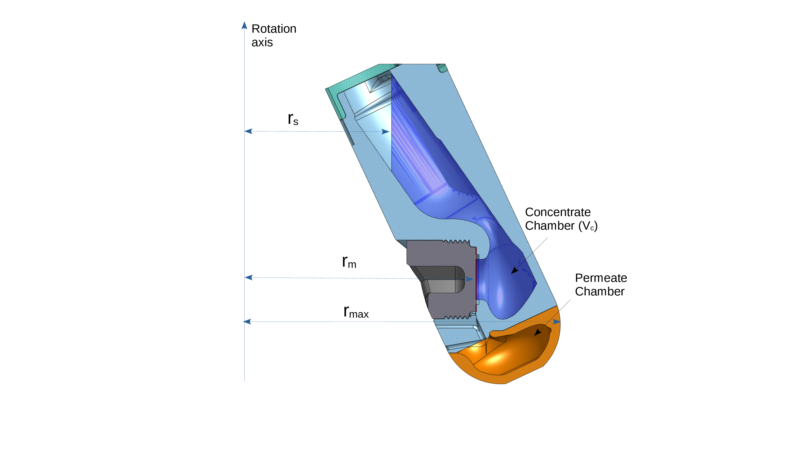

Cartridge description
The CentrivaLab 94/25 is an orthogonal centrifugal membrane filter (O-CMF) cartridge that converts rotor speed directly into transmembrane pressure without external pumps. The membrane is oriented orthogonally to the centrifugal acceleration field so that pressure acts normal to the membrane surface, thereby minimising concentration polarisation.
The CentrivaLab 94/25 is intended for use in fixed-angle centrifuge rotors accommodating standard round-bottom centrifuge tubes of 94 mL, with a rotor angle of approximately 25°. The reference rotor is the Sigma fixed-angle rotor 12159 (6 × 94 mL, 25°, maximum speed 15 500 rpm).
The radial coordinates used throughout this specification are the membrane radius rm, the free-surface radius rs(V), and the rotor-imposed maximum liquid radius rmax. Their definitions and the cartridge geometry are shown in Figure 1.

Intrinsic characteristics
| Parameter | Value |
|---|---|
| Nominal feed volume | 22.5 mL |
| Operating fill range | 21.5–22.5 mL |
| Membrane coupon diameter | 20 mm |
| Effective membrane area | 1.45 cm² |
| Membrane offset (δm) | 0.0268 m |
| Free-surface intercept (δs*) | 2.384 × 10⁻² m |
| Free-surface slope (α) | 1.315 × 10⁻³ m mL⁻¹ |
Application to the Sigma rotor 12159
For the Sigma fixed-angle rotor 12159 (rmax = 0.099 m, rm = 0.0722 m), the maximum achievable transmembrane pressure at 15 500 rpm is approximately 40 bar at nominal fill volume.
Required rotor speed (RPM) to reach a target transmembrane pressure — water at 20 °C. Dashes indicate conditions exceeding the rotor speed limit.
| Δp (bar) | 22.5 mL | 22.0 mL | 21.5 mL |
|---|---|---|---|
| 2 | 3 411 | 3 445 | 3 480 |
| 5 | 5 394 | 5 447 | 5 502 |
| 10 | 7 628 | 7 703 | 7 780 |
| 15 | 9 342 | 9 434 | 9 529 |
| 20 | 10 788 | 10 893 | 11 003 |
| 30 | 13 212 | 13 341 | 13 476 |
| 40 | 15 256 | 15 405 | — |
Compatible fixed-angle rotors
| Manufacturer | Model | Tubes | Angle | Max speed |
|---|---|---|---|---|
| Sigma | 12159 | 6 × 94 mL | 25° | 15 500 rpm |
| Beckman Coulter | JA-20 | — | ~25° | — |
| Beckman Coulter | JA-20.50 | — | ~25° | — |
Exact operating conditions depend on rotor geometry. Verify rmax before use.
Materials & chemical compatibility
Acrylic resin
Suitable for aqueous feeds in standard NF and RO screening workflows.
PEEK / PAEK / PPS
Recommended for OSN applications and solvent-oriented workflows requiring broad chemical compatibility.
Research use statement: CentrivaLab is a commercial brand of TalentGround Lda, Lisbon, Portugal. CentrivaLab products are intended for research and process development use only and are not intended for clinical or diagnostic use.